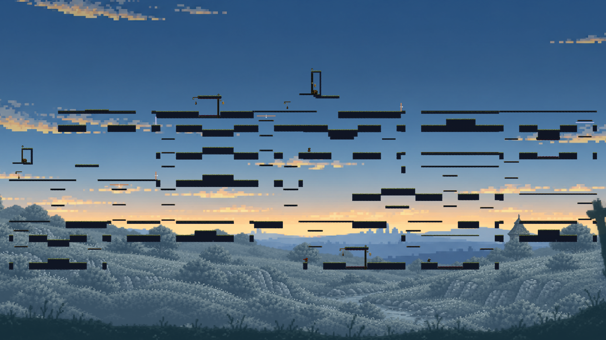
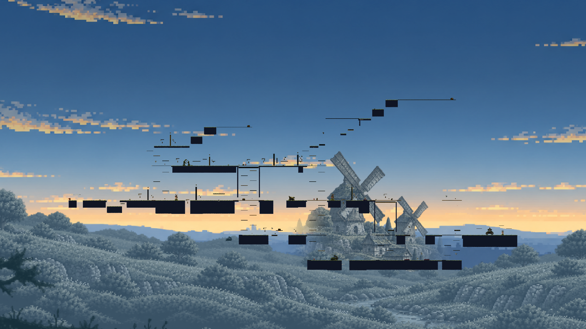

A 主线：空中击铃 → 命中回充 → 岩拱
下载完整录像 · 正常1倍 / 程序输入；保留原始连续过程。
真实 Godot 整图试玩 · A/D 移动，Space 单跳，鼠标松开反冲，S 下穿，E 购买，M 整图。
保留上一轮19 Macro多环路整图，按具体动作需求修订四处内容。其余15份内容复用；Map新增连接地形0。技术通过不等于好玩，等待这轮实际视频反馈。

下载完整录像 · 正常1倍 / 程序输入；保留原始连续过程。
下载完整录像 · 正常1倍 / 程序输入；保留原始连续过程。
入口不再只是跑过地形：空中向后击铃的同一枪负责开门与穿越。主线加入真实敌人命中回充和第二次反冲；出口前增加实际尖刺净空。回程验证保留敌人受伤、死亡及门关闭后的状态，不靠重置恢复成功。
实测改善幅度有限：相同拓扑主线走路策略占比 43.1% → 39.0%，耗时 32.93s → 30.70s。第一条奖励远征与替代主路线基本未变，不能将局部改善外推整张地图更好玩。
只有四处内容得到修订，其余长廊和反冲竖井仍重复，替代主路线改善较少。入口限时与尖刺提高了失败压力，缺少足够教学与可恢复失误区；测试通过不能代替手感认可。岩廊因动作净空而局部变薄，地貌与动作仍需联合设计。通路铃不能冒称不可绕过的全局锁，真正宝箱腔另做闭门隔离检查。
| 路线 | 实测程序耗时 | 射击 | 走路策略时间 | 空中敌人命中 | 实际开铃 |
|---|---|---|---|---|---|
| main | 30.7s | 12 | 39.0% | 1 | 1 |
| reward-expedition-0 | 72.5s | 12 | 45.4% | 0 | 1 |
| reward-expedition-1 | 78.5s | 19 | 47.6% | 0 | 3 |
| alternative-main | 43.4s | 12 | 44.9% | 0 | 0 |
| timed-closed-return | 80.4s | 19 | 46.9% | 0 | 4 |
走路策略含到达稳定，不能当纯跑图比例；更多射击也不能直接当趣味评分。

| 维度 | 本轮实验图 | 主游戏正式v12 |
|---|---|---|
| 探索骨架 | 19 Macro / 27 接缝；本轮一张冻结图 | 20 探索地点 / 59–63 实例；五 Seed 三种空间家族 |
| 动作内容 | 四处需求适配：限时击铃反冲、真实敌人回充、尖刺岩拱；保留两种宝库 | 已有远程顺序铃、受控渡台、齿轮、荆棘、反冲跨度等配方及区域分配 |
| 生态与完成度 | 1敌人、2宝箱、1商人；无Boss战、战役 | 15–19敌人、4宝箱、商人、Boss及跨图流程 |
| 本轮取舍 | 加强主动射击，保留零填充拼接与真实回程；内容仍不够丰富 | 借鉴其内容配方、区域身份、恢复带和生态；不能只复制房间数量 |
主游戏五 Seed 已重新实际生成；一条当前正式主路线实际运行到Boss准备区。地图规模、内容预算和输入策略不同，不用通关秒数判优劣。
本轮21条整图策略（8独立输入扰动）、50声明方向通过；热库19/19复用后5条整图复验通过。10条有限简化策略均未完成；不作全局不可绕过保证。两段正常速度原生录像共6550帧与物理见证逐字段相同。完整失败与预算追加理由另见版本化归档。
沿用主游戏的动作配方、区域身份、战斗与恢复节奏；结合本研究的探索职责、直接拼接、收益保护和连续回程验证。先让少量明显不同的挑战形成完整体验段，再由它们约束形状与端口。扩大库前先审核原型；不能适配就反馈导演，不能删挑战后继续算成功。
结构化三方对照、原始证据与限制 · 人工趣味认可0，生产准入关闭。